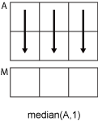

median
Median value of array
Syntax
Description
M = median( returns
the median value of A)A.
If
Ais a vector, thenmedian(A)returns the median value ofA.If
Ais a nonempty matrix, thenmedian(A)treats the columns ofAas vectors and returns a row vector of median values.If
Ais an empty 0-by-0 matrix,median(A)returnsNaN.If
Ais a multidimensional array, thenmedian(A)treats the values along the first array dimension whose size does not equal 1 as vectors. The size ofMin this dimension becomes1, while the sizes of all other dimensions remain the same as inA.If
Ais a table or timetable, thenmedian(A)returns a one-row table containing the median of each variable. (since R2023a)
median returns natively in the class of A, such that
class(M) = class(A).
M = median(___, specifies
whether to include or omit missing values in missingflag)A for any of the
previous syntaxes. For example, median(A,"omitmissing") ignores
all missing values when computing the median. By default,
median includes missing values.
Examples
Input Arguments
Input data, specified as a vector, matrix, multidimensional array, table, or timetable.
Data Types: single | double | int8 | int16 | int32 | int64 | uint8 | uint16 | uint32 | uint64 | logical | categorical | datetime | duration | table | timetable
Dimension to operate along, specified as a positive integer scalar. If you do not specify the dimension, then the default is the first array dimension whose size does not equal 1.
Dimension dim indicates the dimension whose
length reduces to 1. The size(M,dim) is 1,
while the sizes of all other dimensions remain the same.
Consider an m-by-n input matrix,
A:
median(A,1)computes the median of the elements in each column ofAand returns a1-by-nrow vector.
median(A,2)computes the median of the elements in each row ofAand returns anm-by-1column vector.
median returns A when dim is
greater than ndims(A).
Vector of dimensions, specified as a vector of positive integers. Each element represents a dimension of the input array. The lengths of the output in the specified operating dimensions are 1, while the others remain the same.
Consider a 2-by-3-by-3 input array, A. Then
median(A,[1 2]) returns a 1-by-1-by-3 array whose
elements are the medians of each page of A.

Missing value condition, specified as one of the values in this table.
| Value | Input Data Type | Description |
|---|---|---|
"includemissing" | All supported data types | Include missing values in
|
"includenan" | double, single,
duration | |
"includenat" | datetime | |
"includeundefined" | categorical | |
"omitmissing" | All supported data types | Ignore missing values in
A, and compute the median over fewer
points. If all elements in the operating dimension are
missing, then the corresponding element in
M is missing. |
"omitnan" | double, single,
duration | |
"omitnat" | datetime | |
"omitundefined" | categorical |
Since R2024a
Weighting scheme, specified as a vector, matrix, or multidimensional
array. The elements of W must be nonnegative.
If you specify a weighting scheme, median returns the
weighted median, which is the value in A associated with
a cumulative 50% of the weights specified by W
[1]. The
weighted median is less affected by extreme values compared to the standard
median.
If W is a vector, it must have the same length as the
operating dimension. Otherwise, W must have the same size
as the input data.
If the input data A is a table or timetable, then
W must be a vector.
You cannot specify this argument if you specify vecdim
or "all".
Data Types: double | single
Algorithms
For ordinal categorical arrays, MATLAB® interprets the median of an even number of elements as follows:
| If the number of categories between the middle two values is ... | Then the median is ... |
|---|---|
| zero (values are from consecutive categories) | larger of the two middle values |
| an odd number | value from category occurring midway between the two middle values |
| an even number | value from larger of the two categories occurring midway between the two middle values |
References
[1] “Weighted median.” In Wikipedia, May 21 2023. https://en.wikipedia.org/wiki/Weighted_median.